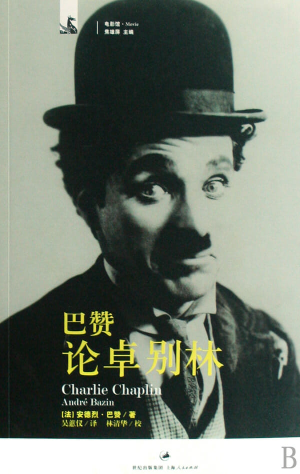

注：【】部分为笔者心得，非原文摘抄。
- 一切物品的实用功能都是以人世的秩序为参照的，这个秩序本身就是实用、功利的，且包含着对未来的预见。
- 当仇恨本身已经失去意义的时候，我们才能真正得到解脱。
- 贪婪的欲望腐蚀了人类的灵魂，将世界裹挟在层层仇恨之中，只是我们大踏步地奔向苦难和血腥。我们提升了速度，但却成了速度的奴隶；机械化带来了极大的丰富，却也使我们心中物欲横流。科学使我们不顾廉耻，智力使我们变得铁石心肠。
- 只要人们不畏牺牲，自由将永世不灭！
- 方法和体系的规范一旦超过限度反而会将其创造者推入险境。
- 即便是集体创作的作品，也只有当每一个作者的人格都在受众面前得到充分体现时，方才存在其价值。
- 所有人都会成熟，他对生命的认识会日渐增长，他的创作自然会与他一同发生演变。
- 天才本身就含有冒天下之大不韪的颠覆性元素。
- 在排练每一场戏之前，卓别林都要亲自弹奏乐谱，以便能沉浸到这一场戏的音乐内容之中。
- 没有观众，艺术家将是不完整的，观众给予或收回的青睐并不是附加于舞台人物的一个外物，相反，这种青睐就是舞台人物的一个组成部分。
- 步入暮年后，尊严就成了头等大事。
- 简单的生活，是一笔无上的财富，但深深打上艺术烙印的生活却是无论如何也不能捐弃的。
- 很多名噪一时的小说或戏剧作品都已经被人遗忘，正是因为它们的意义仅仅停步于透露秘密或满足好奇心，但它们与那些有价值的作品的差距，就是后者在个人的苦难中牵动了人类的普遍境遇。
- 电影的精髓：通过形象化而完成抽象化。